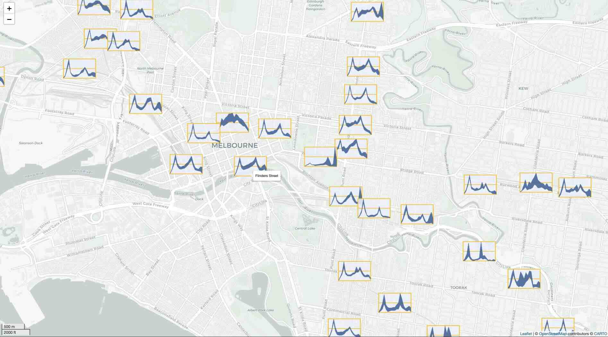

Overview
The sugarglider package extends the capabilities of
ggplot2 by introducing functions specifically designed for visualizing
seasonal patterns in spatio-temporal data. It includes
geom_glyph_ribbon() and geom_glyph_segment() ,
which represent measurements recorded over time at specific locations
through the use of glyph maps. These functions enable clear depictions
of seasonal trends by leveraging the combination of x_major and
y_major coordinates.
The structure of glyph maps in sugarglider consists of
four main layers: the base map, glyph boxes, reference lines, and ribbon
or segment glyphs. Additionally, users can create a legend, adding an
extra layer to the glyph maps. Apart from the base map, sugarglider
offers functionalities to generate all the elements of a comprehensive
glyph map, as illustrated in the figure below.
 Each layer can be
plotted independently, and the package supports the creation of glyph
plots using either ribbon or segment geometries. The core functionality
includes:
Each layer can be
plotted independently, and the package supports the creation of glyph
plots using either ribbon or segment geometries. The core functionality
includes:
geom_glyph_ribbon(): Displays an interval on the y-axis for each x_minor value, with the bounds defined by ymin_minor and ymax_minor. This function draws ribbon geometry usinggeom_ribbon()from ggplot2 to draw ribbon geometry, resulting in ribbon glyphs. Each glyph is plotted based on the combination of x_major and y_major coordinates. This functionality is particularly useful for visualizing ranges or uncertainties in the data.geom_glyph_segment(): Connects y_minor to yend_minor with a straight line usinggeom_segment()from ggplot2, resulting in segment glyphs. Each glyph is plotted based on the combination of x_major and y_major coordinates.
vic_temp <- aus_temp |>
filter(id %in% c("ASN00026021", "ASN00085291", "ASN00084143"))
# Define a color palette
color_palette <- c("deepskyblue4", "coral3")
p1 <- vic_temp |>
ggplot(aes(x_major = long,
y_major = lat,
x_minor = month,
ymin_minor = tmin,
ymax_minor = tmax)) +
geom_sf(data = abs_ste |> filter(NAME == "Victoria"),
fill = "antiquewhite", color = "white", inherit.aes = FALSE) +
# Customize the size of each glyph box using the width and height parameters.
add_glyph_boxes(color = color_palette[1]) +
add_ref_lines(color = color_palette[1]) +
geom_glyph_ribbon(color = color_palette[1], fill = color_palette[1]) +
# Theme and aesthetic
theme_glyph() +
labs(title = "geom_glyph_ribbon()") +
theme(plot.title = element_text(hjust = 0.5),
title = element_text(color = color_palette[1],
family = "mono"))
p2 <- vic_temp |>
ggplot(aes(x_major = long,
y_major = lat,
x_minor = month,
y_minor = tmin,
yend_minor = tmax)) +
geom_sf(data = abs_ste |> filter(NAME == "Victoria"),
fill = "antiquewhite", color = "white", inherit.aes = FALSE) +
# Customize the size of each glyph box using the width and height parameters.
add_glyph_boxes(color = color_palette[2]) +
add_ref_lines(color = color_palette[2]) +
geom_glyph_segment(color = color_palette[2]) +
# Theme and aesthetic
theme_glyph() +
labs(title = "geom_glyph_segment()") +
theme(plot.title = element_text(hjust = 0.5),
title = element_text(color = color_palette[2]))
grid.arrange(p1, p2, ncol = 2) 
In addition to these two functions, sugarglider offers several other
features that enhance the customization of glyph maps. The
add_ref_box() function introduces reference boxes that
visually frame individual glyphs, helping to define boundaries and
distinguish glyphs from each other. The add_ref_line()
function draws a horizontal midpoint for each glyph, facilitating
comparisons across data points. The add_glyph_legend()
function allows users to display an enlarged version of a randomly
chosen glyph in the bottom-left corner of the panel, enabling users to
visualize the data range. Lastly, the theme_glyph()
function provides a customized theme for glyph maps, built on top of
theme_map() from ggthemes. It adjusts the
plot’s appearance, including the legend position, text styles, and
background settings, to create a clean, visually consistent layout for
glyph visualizations.
Aesthetics
sugarglider provides the same aesthetics for
geom_glyph_ribbon() and geom_glyph_segment()
as those available in geom_ribbon() and
geom_segment() from ggplot2. To include a variable in the
glyph plot, it must be specified as an aesthetic. The functions in
sugarglider expect spatial coordinates as the major axis and temporal
data, along with some measurements, as the minor axis.
To produce glyph-maps, the following aesthetics are required:
| Aesthetics | Description |
|---|---|
x_major,y_major
|
Spatial coordinates that define the position of glyphs. |
x_minor |
Represents temporal data associated with each glyph. |
ymin_minor, ymax_minor
|
Used by geom_glyph_ribbon() to establish the lower and
upper bounds of the ribbon geometry within each glyph. |
y_minor, yend_minor
|
Used by geom_glyph_segment() to set the start and end
points of the segment geometry within each glyph. |
The functions add_ref_box(),
add_ref_line(), and add_geom_legend() are
compatible with either ymin_minor, ymax_minor, or
y_minor, yend_minor. Additionally, sugarglider
introduces several customizable options to further tailor the visual
aspects:
| Option | Default | Description |
|---|---|---|
colour |
"black" |
Sets the color for line segments and borders. |
linewidth |
0.5 |
Specifies the width of the line for borders. |
linetype |
1 |
Defines the style of the line for borders. |
fill |
"black" |
Determines the color of the interior area of the geometries. |
alpha |
0.8 |
Controls the transparency level of the glyphs. |
Options
Options within the sugarglider package allow you to
tailor the behavior of your visualizations to meet the specific needs of
your analysis. The global_rescale argument provides control
over whether rescaling should occur globally across all data points or
be handled individually for each glyph.
sugarglider also offers a variety of customizable
features to enhance the flexibility and precision of visualizations. For
example, it facilitates the scaling of minor values within the glyph
along both the x and y axes. Users can specify their own rescale
function by replacing “identity” with a custom function in
x_scale and y_scale. If a user wishes to modify the
rescaling function on only one axis, they can replace the value of the
corresponding parameter with their chosen function and retain “identity”
for the other. In this package, “identity” rescale the minor axes to an
interval of [-1,1]. The impact of rescaling on glyphs and its
implications for visual interpretation will be thoroughly discussed in
the upcoming section.
Additionally, the width and height of the glyphs are adjustable, allowing users to modify the appearance of each glyph to match the dimensions and scaling of the data being visualized. These customization options ensure that sugarglider can adapt to a broad range of data types and requirements, making it a versatile tool for seasonal spatiotemporal data visualization.
| Option | Default | Description |
|---|---|---|
x_scale |
"identity" |
This function scales each set of minor values within a grid cell along the x-dimension. |
y_scale |
"identity" |
This function scales each set of minor values within a grid cell along the y-dimension. |
width |
default |
The width of each glyph. The default is set to the
smallest distance between two consecutive coordinates, converted from
meters to degrees of latitude using the Haversine method. |
height |
default |
The height of each glyph. The default is calculated
using the ratio (1:1.618) relative to the width, to
maintain a consistent aspect ratio. |
global_rescale |
TRUE |
Determines whether rescaling is applied globally across all glyphs or individually for each glyph |
Interactivity
Interactive graphics are particularly useful when working with
spatio-temporal data as they allow users to explore the data from
multiple perspectives. The cubble
package exemplifies this by creating linked interactive plots using
crosswalk::bscols(). In this vignette, we will demonstrate
how to create interactive glyph maps using Leaflet and ggiraph.
Create glyph maps with leaflet
The dataset used in this example, train, provides a
comprehensive monthly summary of hourly patronage at each train station
in Victoria for the fiscal year 2023-2024. To create interactive glyph
maps with Leaflet, we first need to save each glyph as a PNG and then
add these to the Leaflet basemap as icons. The process starts by
creating a list of unique train stations, then iterates through each
station to generate ribbon glyphs using
geom_glyph_ribbon(), add_glyph_boxes() and
add_ref_lines(). Each glyph is saved in PNG format, and the
file paths for all the PNGs are stored in an object for the next
step.
# Generate a list of unique train stations
df_station <- train$station_name |> unique()
# Generate PNG of all the ribbon glyph
purrr::map(1:length(df_station), function(i) {
dt <- train |> filter(station_name == df_station[i])
p <- dt |>
ggplot(aes(x_major = long, y_major = lat,
x_minor = hour, ymin_minor = min_weekday,
ymax_minor = max_weekday)) +
add_glyph_boxes(color = "#ffc40d",
fill = "#eff4ff", alpha = 0.5,
linewidth = 2, width = 3, height =2) +
add_ref_lines(color = "#ffc40d", alpha = 1,
linewidth = 2, width = 3, height =2) +
geom_glyph_ribbon(color = "#2b5797", fill = "#2b5797",
width = 3, height =2) +
theme_void()
file_path <- paste0("../man/figures/glyph_", df_station[i], ".png")
ggsave(file_path, plot = p, width = 3, height = 2, units = "in",
path = "../man/figures")
}) -> train_png To create the base map for Leaflet, we use the leaflet()
function and addProviderTiles() with CartoDB.Positron as
the provider to achieve a light, grey map aesthetic. Additionally, a
scale bar is added at the bottom left corner for reference.
# Create a leaflet map
leaflet_map <- leaflet() |>
addProviderTiles("CartoDB.Positron") |>
addScaleBar(position = "bottomleft")Next, we iterate through all the PNG files and convert them into
icons using the makeIcon() function. Users can control the
dimensions of each icon by modifying the iconWidth and
iconHeight arguments. The final step is to add each icon to
the Leaflet map using addMarkers(). Within the options
argument of addMarkers, users can fine-tune each glyph’s
display properties, such as the opacity level. The label
argument allows users to specify the information they wish to display
with the hover-over effect, which in this example is set to display the
station ID.
# Loop through the PNG files and add them to the map
for (i in seq_along(train_png)) {
icon <- makeIcon(iconUrl = train_png[i], iconWidth = 100, iconHeight = 60)
dt <- train |> filter(station_name == df_station[i])
leaflet_map <- leaflet_map |>
addMarkers(lng = dt$long[1], lat = dt$lat[1], icon = icon,
label = dt$station_name, options = markerOptions(opacity = 0.1))
}
leaflet_map